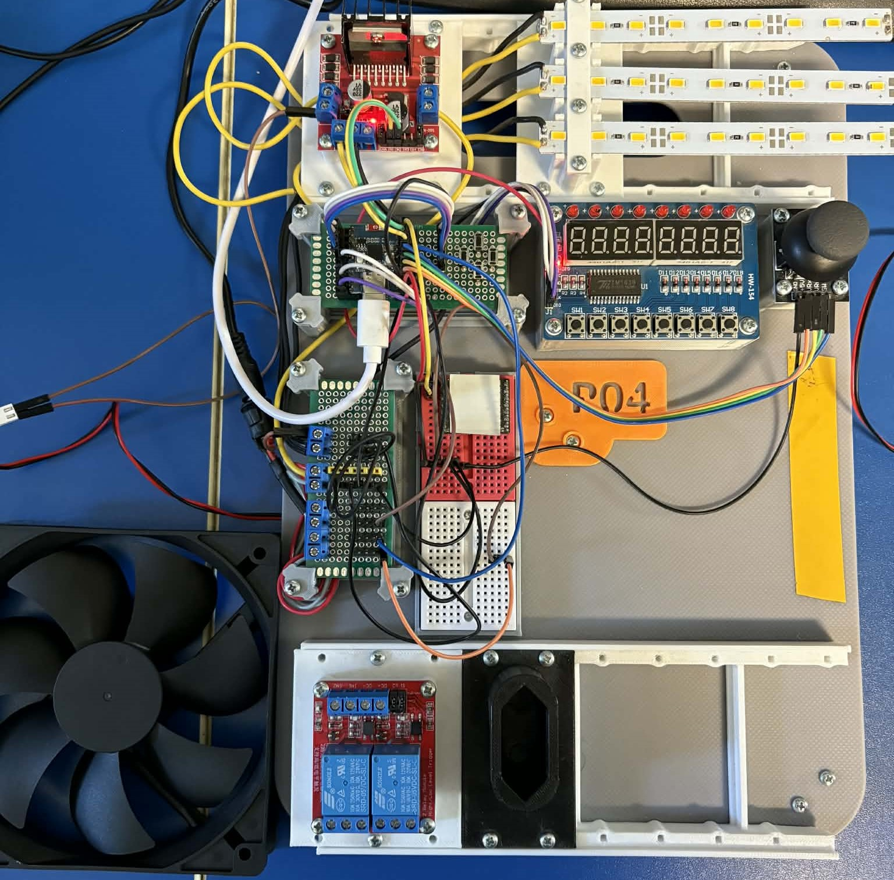
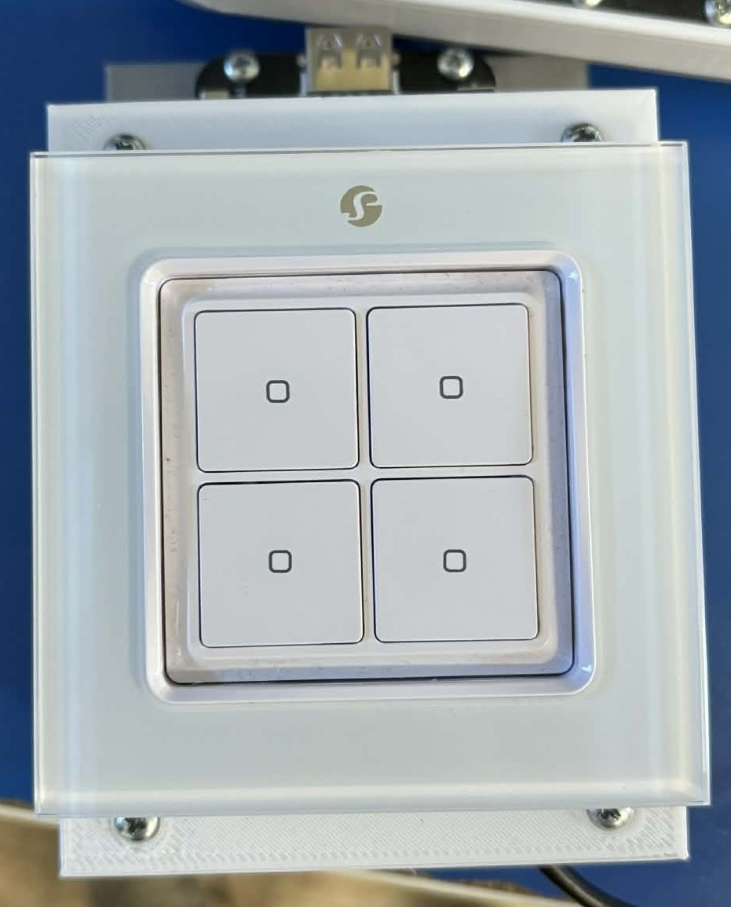
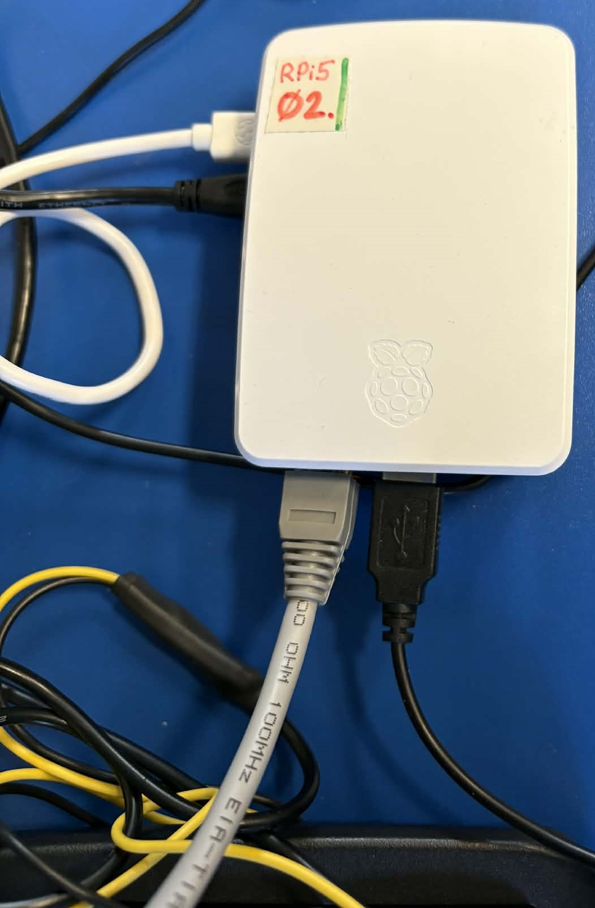
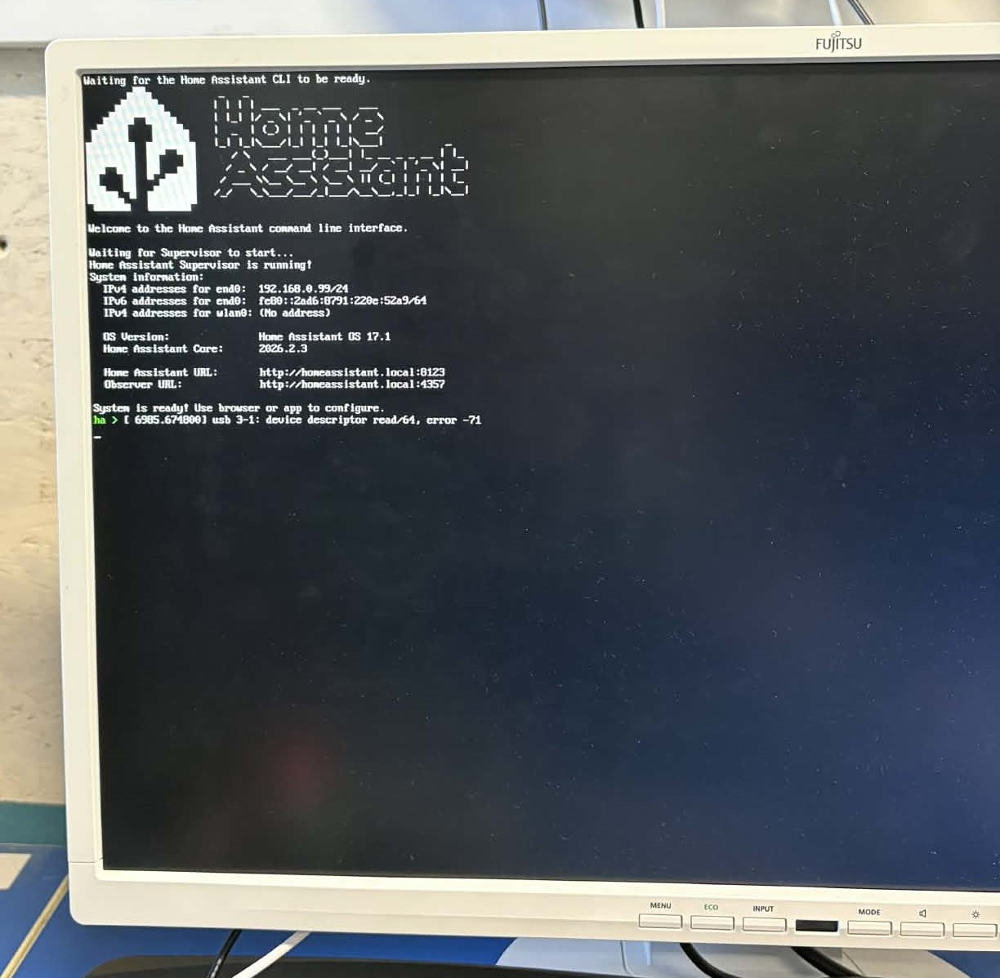
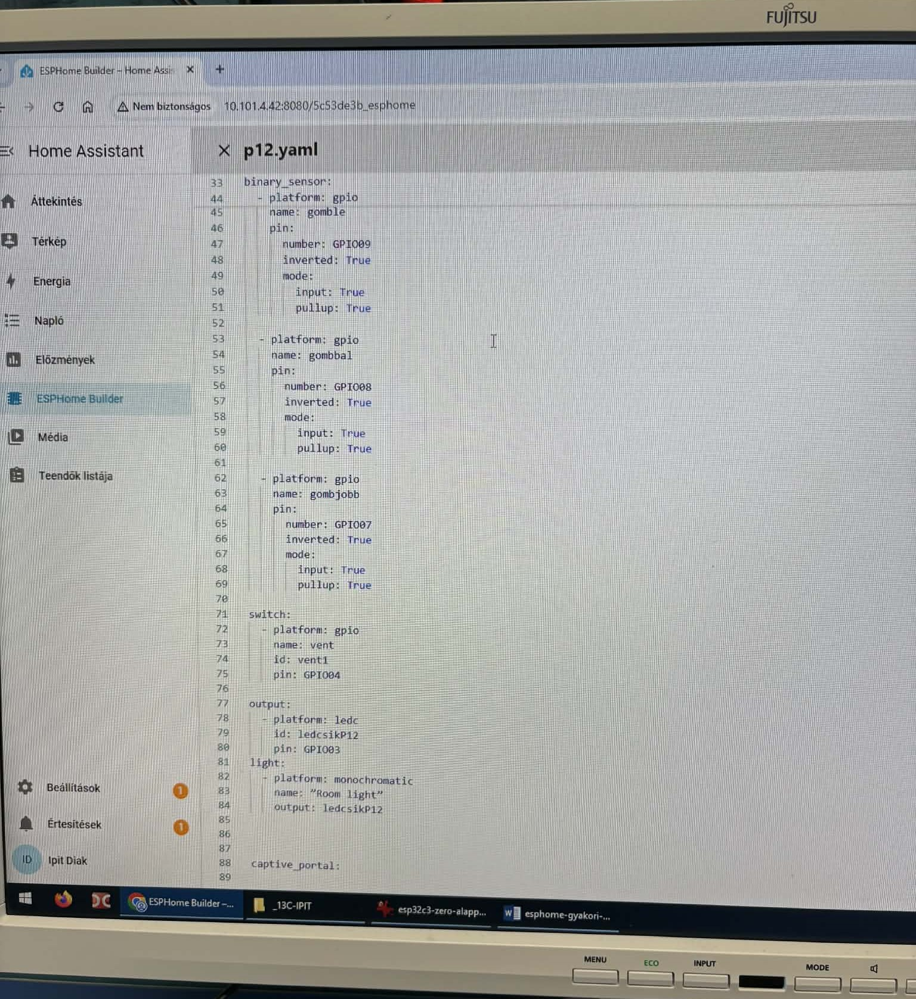
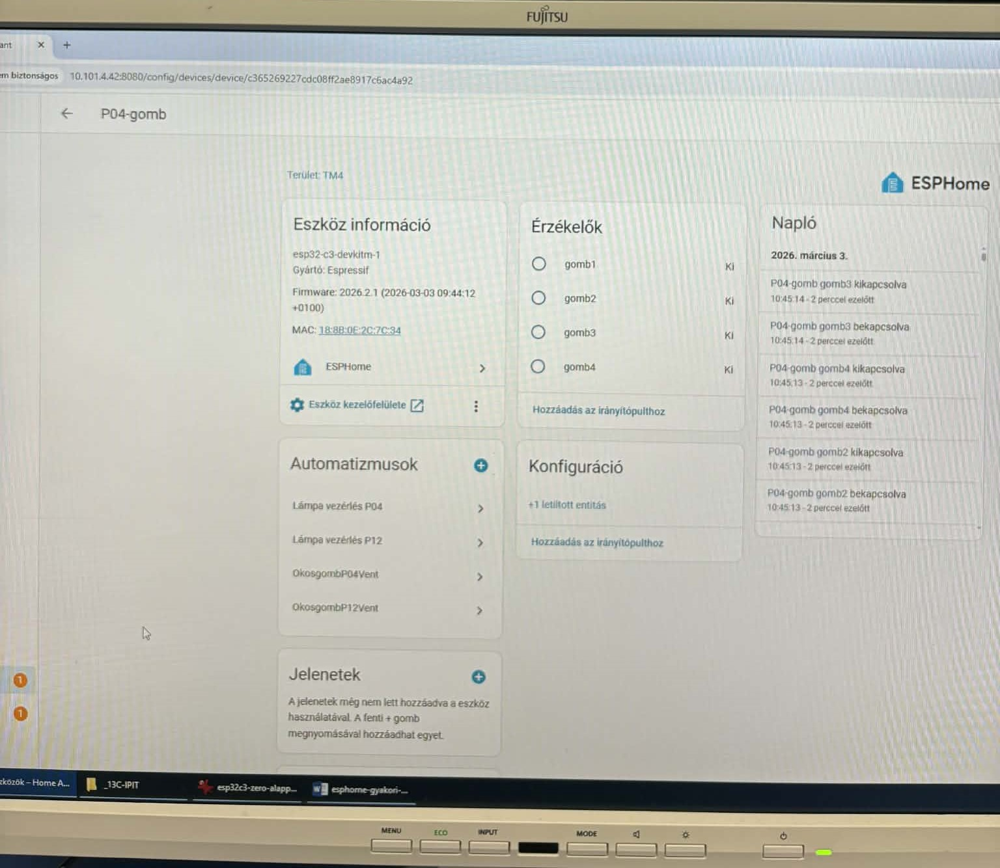
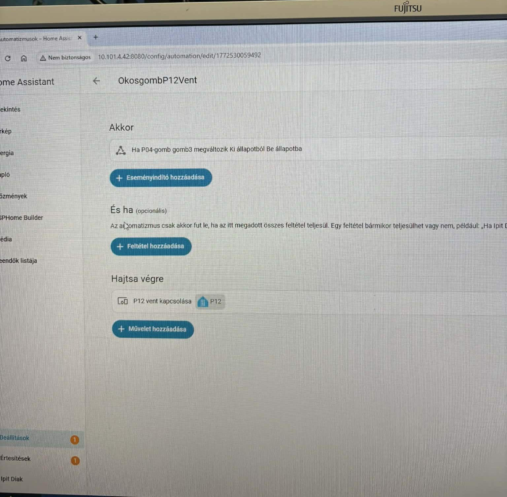

Projekt #4 - Távolról vezérelt ESP32
Projektfeladat leírása
A projekt célja egy egyszerű okosotthon rendszer megvalósítása volt Raspberry Pi és ESP32 mikrokontrollerek segítségével. A feladat során különböző eszközöket kellett összekapcsolni, amelyek segítségével ventilátorokat és LED fénycsíkokat lehet vezérelni. A rendszer vezérlése több módon is történhetett: fizikai gombokkal, okosgombokkal, valamint webes felületen keresztül. A projekt során két külön panel került kialakításra, amelyekhez ventilátorok és LED csíkok csatlakoztak. A vezérlést ESP32 mikrokontrollerek végezték, amelyek a Raspberry Pi segítségével kommunikáltak egymással. A Raspberry Pi egy központi egységként működött, amelyen a Home Assistant rendszer futott. A Home Assistant segítségével lehetett kezelni az eszközöket és az automatizmusokat. A projekt során az volt a cél, hogy a különböző eszközök egy hálózaton keresztül kommunikáljanak és együtt működjenek. A feladat során a hardverek összekötése mellett a szoftveres konfigurációt is el kellett végezni. A projekt eredményeként egy működő, egyszerű okosotthon vezérlő rendszer jött létre.
A projektben használt hardveres eszközök
● Raspberry Pi ●
● 2 db ESP32 C3 mikrokontroller ●
● 2 db vezérlő panel ●
● 2 db ventilátor ●
● 2 db LED fénycsík ●
● 1 db okosgomb (4 gombos vezérlő) ●
● Router ●
● 2 db számítógép ●
A projektben használt szoftveres eszközök
● Home Assistant ●
● ESPHome ●
● Raspberry Pi operációs rendszer ●
● YAML konfigurációs fájlok ●
A Home Assistant segítségével történt az okosotthon rendszer kezelése és az automatizmusok létrehozása. Az ESPHome rendszer segítségével konfiguráltuk az ESP32 eszközöket és határoztuk meg azok működését YAML konfigurációs fájlokon keresztül.
Konklúzió és Önreflexió
A projekt során sikerült egy működő okosotthon vezérlő rendszert létrehozni Raspberry Pi és ESP32 eszközök segítségével. A feladat során megismerkedtünk az IoT rendszerek működésének alapjaival és az eszközök hálózati kommunikációjával. A projekt során megtanultuk, hogyan lehet különböző hardver eszközöket összekapcsolni és szoftveresen konfigurálni. A Home Assistant rendszer használata lehetővé tette az eszközök egyszerű vezérlését és automatizmusok létrehozását. A konfigurációs fájlok elkészítése során néhány technikai probléma is felmerült, különösen a konfigurációk letöltése és beállítása közben. Ezeket a problémákat azonban sikerült megoldani, és közben sok tapasztalatot szereztünk. A projekt hozzájárult ahhoz, hogy jobban megértsük az okosotthon rendszerek működését és felépítését. A gyakorlati megvalósítás során fejlődött a problémamegoldó képességünk is. Összességében a projekt elvégzése hasznos tapasztalatot jelentett számunkra. A feladatot érdekesnek és tanulságosnak találtuk, és szívesen dolgoznánk hasonló projekten a jövőben is.
Képek és Videók






